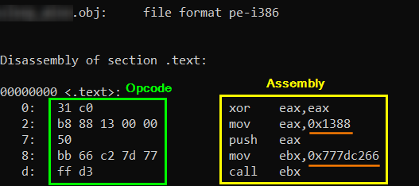

create a Shellcode
1. Assembly code(ASM)The below ASM code first push the parameter to the stack and then call the function that we want by using its address found before
xor eax,eax ; zero out the eax register
mov eax, <parameter-for-the-function> ; move the parameter value into eax
push eax; ; push the function parameter onto the stack
mov ebx, <address-function> ; move the address of the function that we want to call into ebx
call ebx ; call the function
nasm -f win32 file.asm -o file.obj
-f →
format of the output file; in this case Microsoft object file format for 32-bit OS
-o → name of the
output file
3. Disassemble the object fileWe want know the Opcode(hexadecimal values) of our assembly code
objdump -d -Mintel file.obj
•
-d → tells the tool to disassemble the input file
•
-Mintel → is a disassembler option that allows us to select disassembly for the given architecture (Intel in our case)
0x1388 is our parameter for the function
0x777DC266 is the address of the function that we want call
4. Create the ShellcodeTo create the shellcode we need to
remove the spaces and add the
\x prefix to the
Opcode obtained
\x31\xc0
\xb8\x88\x13\x00\x00
\x50
\xbb\x66\xc2\x7d\x77
\xff\xd3
To test if the shellcode works we need to Compile the C++ file seen also
here Because ASLR is enabled(address randomization) the below code work only on the Windows 7 machine tested
char code[] =
"\x31\xc0"
"\xb8\x88\x13\x00\x00"
"\x50"
"\xbb\x66\xc2\x7d\x77"
"\xff\xd3";
int main(int argc, char **argv)
{
int (*func)();
func = (int (*)()) code;
(int)(*func)();
}